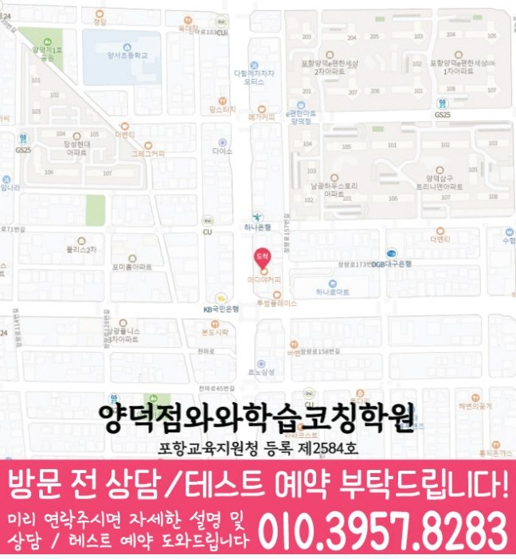

와와학습코칭센터 양덕점
경북 포항시 북구 천마로 66 환호빌딩 402호
GRADE 7 ENGLISH LOCAL GUIDE
와와학습코칭센터 양덕점의 위치와 과목별 가능 학년을 확인하고, 중1 영어 상담에 필요한 학교·학습 자료를 준비해 보세요.
와와학습코칭센터 양덕점의 영어 가능 학년 안내: 중1. 현재 수업 시간·반 편성·정원은 상담에서 확인해 주세요.
경북 포항시 북구 천마로 66 환호빌딩 402호
현재 반 편성과 시간표는 상담에서 확인
포항교육지원청 등록 제2584호
통합 상담 전화 010-6839-8283 · 문의할 때 와와학습코칭센터 양덕점과 학생의 학년을 말씀해 주세요.
교습비 자료의 과목·수업 시간·횟수와 별도 비용을 상담 내용과 함께 확인해 주세요.
아래는 가정에서 활용하는 일반 학습 점검 예시입니다. 현재 학교·교재에서 배우는 내용에 해당할 때 활용하고, 아직 배우지 않은 내용은 현재 진도에 맞춰 확인해 주세요. 학생의 학습 수준과 센터의 실제 수업 구성은 상담에서 확인할 수 있습니다.
문장의 주어와 동사를 찾고 수가 맞는지 확인했나요?
직접 확인할 예 My brother plays tennis.에서 주어와 동사를 표시해 보세요. 주어를 My brothers로 바꾸면 play로 달라지는 이유를 설명해 보세요.
의문사가 요구하는 정보와 답의 내용을 비교했나요?
직접 확인할 예 Why did Hana stay home?에 Because she was sick.라고 답합니다. 이유를 묻는 표현과 답에서 근거가 되는 부분을 연결해 보세요.
대명사가 가리키는 대상과 답을 뒷받침하는 문장을 찾았나요?
직접 확인할 예 Sora bought a notebook. She put it in her bag.에서 She와 it의 대상을 적어 보세요. 물건이 놓인 장소의 근거도 표시해 보세요.
틀린 문항의 근거 문장, 모르는 낱말, 읽기 어려운 구문을 나누어 적어 보세요. 정답만 베끼지 말고 오답을 고른 이유와 다시 읽어 찾은 근거를 짧게 기록해 주세요.
교재 이름·쪽수와 혼자 해결한 부분을 함께 표시하면 상담에서 현재 학습 상태를 설명하기 쉽습니다.
제공 자료의 중학교 참고 목록: 대도중학교, 양덕중학교, 장흥중학교, 환호여자중학교.
학교 목록은 지역 참고 자료입니다. 해당 학교별 반 운영이나 시험 대비 수업을 확인한 정보는 아닙니다. 학생이 사용하는 교재, 실제 과목명·진도, 시험 범위 안내와 최근 오답을 준비해 주세요.
읽기·어휘·문장 쓰기 중 먼저 점검할 부분, 독해 답의 근거를 확인하는 방법, 고친 문장을 다시 확인하는 방법을 질문해 보세요.
위의 센터 정보에 적힌 가능 학년을 확인하고 현재 시간표·반 편성·과목 범위를 문의해 주세요. 이 질문과 학습 예시는 센터의 확정된 수업 방식이나 제공 서비스를 뜻하지 않습니다.
와와학습코칭센터 양덕점의 영어 가능 학년 안내: 중1. 현재 수업 시간·반 편성·정원은 상담에서 확인해 주세요.
학교 참고 목록은 대도중학교, 양덕중학교, 장흥중학교, 환호여자중학교입니다. 학교별 전용 반 개설 여부는 별도로 확인해 주세요. 재학 학교와 학년을 알려 주고 학교 시험 범위표, 교과서와 수업 프린트를 바탕으로 상담할 수 있습니다.
상담 항목을 정리하는 중1 영어 상담에서는 맞고 틀린 결과보다 학생이 받은 설명과 다음 행동이 분명한지 확인하세요. 복습 기록에 ‘짧은 지문을 다시 읽고 정답 근거를 한 문장으로 설명하기’의 실행 여부와 다음 확인일을 함께 남기면 가정에서도 흐름을 살펴볼 수 있습니다.
양덕동에서 영어를 공부하는 중1 학생이 집에서 이어 갈 복습은 긴 분량보다 ‘교과서 한 문장을 바꿔 쓰며 같은 문법이 유지되는지 확인하기’처럼 끝을 확인할 수 있는 행동으로 정합니다. 진단 상담에서는 실행한 날짜와 어려웠던 지점을 다음 피드백에 어떻게 반영할지 물어보세요.
센터의 교습비 자료와 상담에서 과목·횟수·수업 시간을 대조해 주세요. 교재비 등 별도 비용, 결석 시 보강 기준과 과제 피드백 방식도 함께 확인하면 좋습니다.
CONSULTATION SCENARIO
아래 두 장면은 중1 영어 상담 전에 준비할 자료와 질문을 정리한 점검 예시입니다.
가정 상담 장면: 양덕동의 한 학부모가 최근 자료 가운데 문장 구조와 문법 적용에서 막힌 문제와 영어 오답 유형 관련 학습 기록을 나눠 가져오고, 중1 영어 상담에서 제안할 첫 주 확인 항목과 다음 점검일을 질문하는 상황을 가정할 수 있습니다. 이 중1 영어 상담 장면은 실제 이용 후기나 특정 학생의 성과가 아니며, 상담 준비용 가상 예시입니다. 양덕동에서 중1 영어를 공부하는 학생의 학습 결과는 출발점과 실천 정도에 따라 달라질 수 있습니다.
비교 상담 장면: 양덕동에서 중1 영어를 공부하는 학생의 학교 일정과 통학 가능 시간을 적어 두고 와와학습코칭센터 양덕점에서 독해 근거 찾기 관련 기록을 확인하는 방식, 과제 조절 기준, 학부모 공유 항목을 묻는 장면을 생각해 볼 수 있습니다. 이 중1 영어 상담 장면에서 비교할 항목은 학생의 실제 자료와 가능한 일정에 맞춰 조정해야 합니다.


와와학습코칭센터 양덕점의 위치와 양덕동 생활권을 기준으로 중1 영어 상담 정보를 확인합니다. 방문 전 실제 이동 동선과 상담 가능 시간을 함께 확인해 주세요.